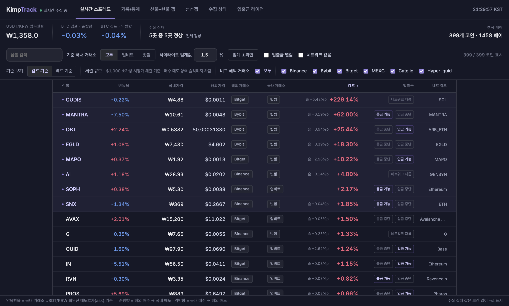

이 김프, 지금 옮길 수 있습니까?
숫자가 커 보여도 입출금이 막혔거나 사고팔 때 단가가 밀리면 옮길 이유가 없습니다. KimpTrack은 이 질문에 답할 근거를 김프 옆에 붙여 둡니다.
서비스로 넘어가기표시된 김프와 먹을 수 있는 김프는 다릅니다
호가창 깊이
흔히 보는 김프는 가격 하나로 계산한 값입니다. 실제로 주문을 넣으면 호가창을 파고들면서 평균 단가가 밀리고, 주문이 클수록 그 차이도 커집니다. 원화와 USDT 환산도 은행 환율 대신 국내 거래소의 실제 USDT 호가로 합니다.
입출금 상태
김프가 아무리 커도 출금이나 입금이 막혀 있으면 코인을 옮길 수 없습니다. 거래소마다 입출금을 네트워크 단위로 확인해서, 한쪽이라도 막혔거나 네트워크가 맞지 않으면 옮길 수 없는 경로로 표시합니다.

지난 7일, 벌어졌던 순간들
1% 넘게 벌어져 1분 넘게 이어진 순간을 사건으로 남깁니다.
최근에 끝난 사건
| 코인 | 경로 | 방향 | 최고 | 지속 | 끝난 시각 |
|---|

어떻게 만들었나
수집
5개 거래소를 WebSocket 으로 받습니다(업비트·빗썸 호가와 현재가, 바이낸스 depth20, 바이빗 orderbook.200, 비트겟 books15). 마켓 목록은 매초, 입출금은 60초마다 확인합니다.
계산
매초 전 페어의 호가창을 $1,000 만큼 걷어 김프·역프 표 한 장을 만들고 Redis 로 넘깁니다.
기록
1초 원값은 InfluxDB 에, 사건(1.0% 진입·0.5% 이탈)과 1분 봉(5분·1시간·4시간·1일로 접음)은 따로 남기고, 거래소 원문은 S3 에 보관합니다.
전달
조회 서버가 표에서 바뀐 행만 모아 한 번만 압축하고, 접속자 모두에게 같은 바이트를 WebSocket 으로 보냅니다.